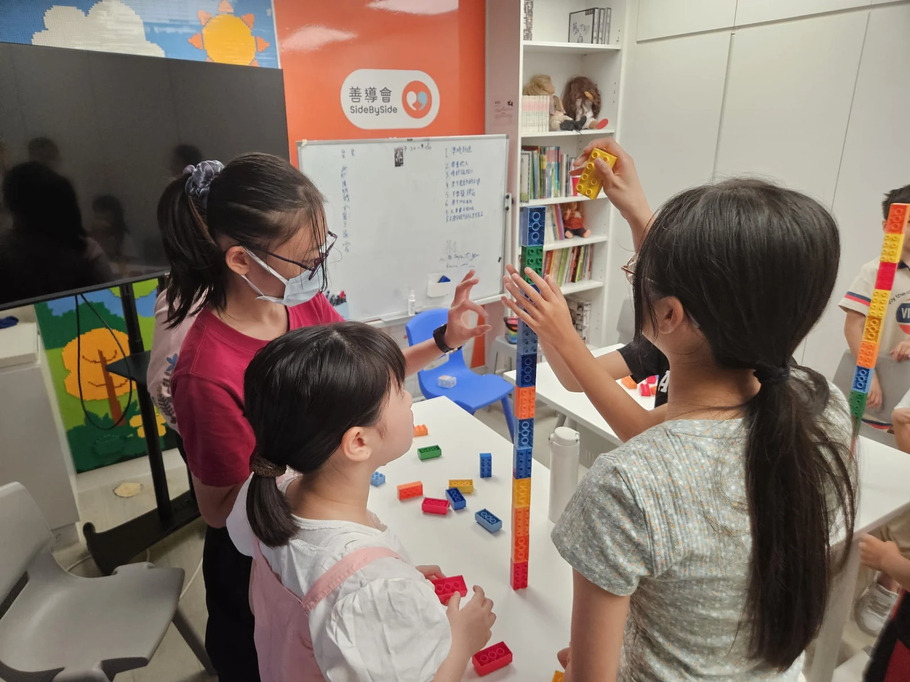
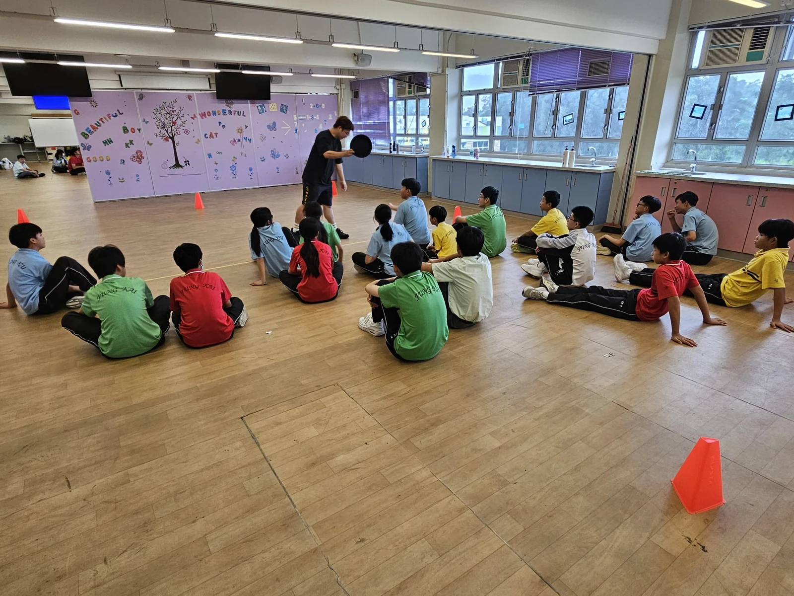

3–6 歲及 6–12 歲
學校及機構合作・歡迎家長查詢
香港兒童課程
及到校活動
樂燃教育中心為學校及機構提供兒童興趣班、多元運動、成長支援小組及課餘導師服務，並按學生年齡和活動目標商議課程安排。

到校課程與活動安排
恆常課後班假期密集營全校主題活動日成長支援小組
我們的服務
了解各類課程的內容及適合對象。
按課程內容確認對象
藝術與表達活動
學校及機構活動
多元運動與團隊活動
按學生需要安排
成長支援與訓練小組
K1 至中六
課餘導師服務

課堂及活動花絮
看看學生參與課堂及小組活動的照片。
常見問題
課程對象、形式及查詢安排。
安排到校課程，需要提供甚麼資料？
請提供學校或機構名稱、學生年齡或級別、活動目標、預計日期、人數及地區。資料未齊也可以先聯絡我們。
興趣班適合甚麼年齡的孩子？
興趣班分為 3–6 歲及 6–12 歲課程。成長支援小組、多元運動及課餘導師服務的對象，會按課程內容及學生需要確認。
可以安排哪些課程形式？
可查詢恆常課後班、假期密集營及主題活動日。課程內容、堂數和時間需與同事確認。
家長可以直接查詢嗎？
可以。請透過 WhatsApp 提供孩子的年齡及有興趣的課程，同事會協助了解合適的服務及現行安排。
查詢課程或學校合作
歡迎透過 WhatsApp 聯絡我們，
提供學生年齡、活動目標和預計日期。